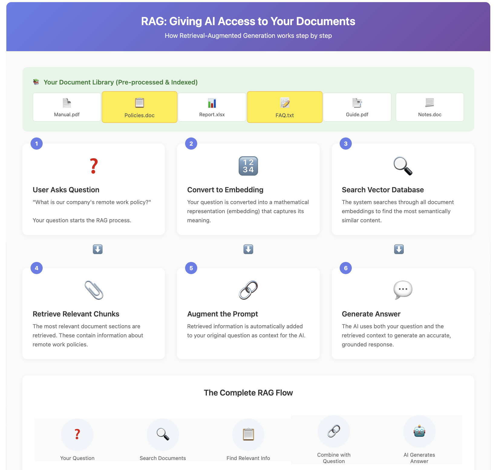
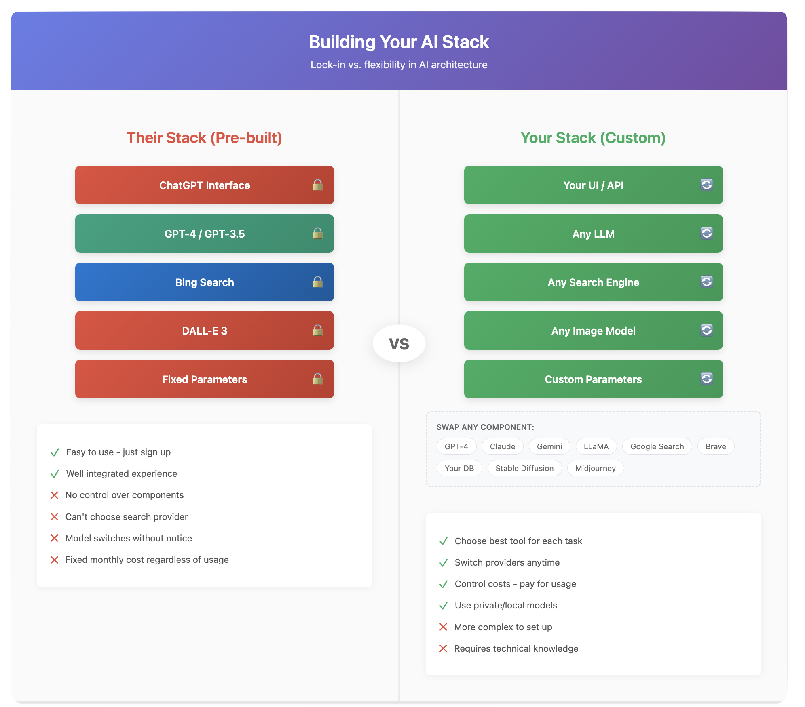

Chapter 5: Augmentation – Breaking Free from AI's Bubble
The Genius in a Library with No Books
Large Language Models have an inherent limitation that might surprise you. During training, they absorb vast amounts of information from their training data, but once that training ends, their knowledge becomes frozen in time. A raw LLM has no way to access new information, check current facts, or interact with the real world. It exists in a bubble, limited to what it learned before its training cutoff date.
This creates an interesting paradox. We have these incredibly capable systems that can discuss complex topics, write code, and solve problems, but they can't tell you today's weather, check your email, or look up the latest stock prices. When faced with questions about recent events, a raw LLM will either honestly admit it doesn't know or, more problematically, generate plausible-sounding but completely fabricated information. Those fabrications are classic hallucinations: the model has no pathway to fresh data, so it fills the gap with its best statistical guess.
The chat applications we use daily have already solved many of these limitations, though they don't always make it obvious how. When you ask ChatGPT about current events, it might seamlessly search the web and incorporate those results into its response. But this raises important questions about control and transparency that we need to understand.
The Search Engine Lock-In
The major AI platforms have made specific choices about how to augment their models with real-world information, and these choices directly affect your experience. ChatGPT partners with Microsoft and uses Bing for web searches. Gemini naturally integrates with Google Search. Claude has partnered with Brave. These aren't random pairings – they reflect business relationships and strategic decisions.
Each search engine has its own strengths and characteristics. Google might excel at finding academic papers, Bing might have better integration with Microsoft's enterprise tools, and Brave might prioritize privacy-conscious results. The search engine fundamentally shapes what information the AI can access and how it understands current events.
When you build your own AI stack, you gain the freedom to choose your information sources based on your actual needs. You might use Google for general queries but connect to specialized databases for industry-specific information. You could prioritize privacy-focused search engines for sensitive queries or integrate directly with your organization's internal search systems. This flexibility becomes crucial when you need reliable, consistent results for specific use cases.
Adding Context: The Foundation of Augmentation
The simplest form of augmentation is directly providing relevant information to the AI within your prompt. This might seem basic, but it's remarkably effective for many use cases. When you paste a document into ChatGPT and ask questions about it, you're manually augmenting the AI's knowledge with specific, relevant information.
This approach has clear advantages. It's simple, requires no technical setup, and gives you complete control over what information the AI sees. You know exactly what context the AI is working with because you provided it yourself. For analyzing specific documents, summarizing meetings, or working with proprietary information, this manual approach often works perfectly well.
The limitations become apparent as scale increases. Context windows, though growing larger, still have limits. You can't paste an entire book or database into a prompt. Finding and selecting the relevant information requires manual effort. And if you need to regularly work with large document collections, copying and pasting quickly becomes impractical.
RAG: Automated Context at Scale
Retrieval-Augmented Generation (RAG) automates and scales the process of providing relevant context. Instead of manually finding and inserting information, RAG systems automatically search through document collections to find the most relevant pieces for any given query.
The process works through a clever combination of technologies. First, all your documents are processed and converted into mathematical representations called embeddings. These embeddings capture the semantic meaning of text in a way that computers can efficiently search. When you ask a question, that question gets converted into the same mathematical format. The system then finds documents with the most similar embeddings – essentially finding content that's semantically related to your query.
The beauty of this approach lies in its seamlessness. From the AI's perspective, it simply sees relevant context appearing in its prompt. From your perspective, the AI can suddenly answer questions about documents it has never seen before. A customer service AI can reference your entire product manual, a research assistant can search through thousands of papers, or a legal AI can cite relevant cases – all without any manual intervention. By grounding answers in retrieved passages, RAG slashes hallucination risk; the model has concrete text to quote instead of guessing.
RAG does have its complexities. The quality of responses depends heavily on the retrieval component finding truly relevant information. Different chunking strategies (how documents are split up) can dramatically affect results. And there's an art to balancing how much context to retrieve – too little and the AI lacks necessary information, too much and important details get lost in the noise.
Function Calling: From Thinker to Doer
While RAG gives AI access to information, function calling gives it the ability to take actions. This transforms AI from a conversational partner into an actual assistant that can interact with other systems and tools on your behalf.
Functions are essentially pre-defined capabilities you give to the AI. These might include checking weather, sending emails, querying databases, running calculations, or interacting with any API-accessible service. The AI learns not just what these functions do, but when and how to use them appropriately.
The implementation is elegantly simple. When the AI determines it needs to use a function, it generates a special response indicating which function to call and with what parameters. The system executes that function and returns the results to the AI, which then incorporates that information into its response. From the user's perspective, the AI seamlessly accesses real-world information or performs actions as part of natural conversation.
This capability enables remarkably sophisticated behaviors. An AI assistant can check multiple data sources, perform calculations on the results, and synthesize everything into a coherent response. It can book appointments after checking calendars, send follow-up emails after meetings, or update databases based on conversational instructions. The AI becomes an orchestrator, coordinating multiple tools to accomplish complex tasks.
Agent Frameworks: Coordinating Complex Workflows
Agent frameworks take function calling to its logical conclusion, enabling AI to tackle multi-step processes that require planning, decision-making, and error recovery. While simple function calling handles straightforward tool use, agents can manage complex workflows that might involve dozens of steps and multiple decision points.
These frameworks provide essential capabilities for complex tasks. Planning systems help AI break down high-level goals into actionable steps. Memory management maintains context across long workflows. Error handling ensures graceful recovery when individual steps fail. Tool selection algorithms choose the right capability for each situation. And reflection mechanisms allow the AI to evaluate its progress and adjust strategies as needed.
Consider a request like "Analyze our competitor's recent product launches and prepare a market positioning report." An agent would break this down into subtasks: identifying competitors, searching for recent product announcements, analyzing features and pricing, comparing with your own products, and formatting findings into a report. At each step, it makes decisions about which tools to use, evaluates the quality of information gathered, and adjusts its approach based on what it finds.
MCP: The Universal Standard
Anthropic's Model Context Protocol (MCP) represents a different philosophy for augmentation. Rather than building proprietary connections to specific services, MCP creates an open standard for how AI systems connect to any tool or data source. This approach promotes interoperability and reduces vendor lock-in.
MCP standardizes the entire interaction pattern between AI and external tools. It defines how tools describe their capabilities, how AI systems request tool usage, how data flows back and forth, and how errors are handled. Any tool built to the MCP standard works with any MCP-compatible AI system, creating a true ecosystem rather than isolated integrations.
This standardization matters because it changes the economics of AI augmentation. Instead of every AI provider building custom integrations with every possible tool, developers can build once to a standard. Instead of being locked into a specific AI provider's ecosystem, organizations can switch between providers while maintaining their tool integrations. The result is more innovation, better tools, and greater flexibility for everyone.
Building Your Own Stack: Architecture Decisions
When you move beyond pre-packaged chat applications to build your own augmented AI system, you face important architectural decisions. Each choice involves tradeoffs between capability, complexity, cost, and control.
Your choice of base LLM affects everything else. More capable models handle complex augmentation better but cost more. Some models have better function calling support than others. Context window size determines how much retrieved information you can work with. You might even use different models for different parts of your system – a powerful model for complex reasoning but a faster, cheaper model for simple extractions.
Search and retrieval infrastructure requires careful consideration. Vector databases for semantic search work well for unstructured documents. Traditional databases remain better for structured queries. You might need both, plus specialized search engines for web content. The retrieval strategy – how you chunk documents, generate embeddings, and rank results – significantly impacts quality.
Tool integration approaches vary from simple to sophisticated. Direct API integrations offer maximum control but require more development. Standard protocols like MCP reduce development effort but might not cover all use cases. Some tools work better as functions, others as separate services. The right mix depends on your specific needs and constraints.
The Reality of Augmented AI
Building augmented AI systems involves navigating tradeoffs and managing complexity. What works well today includes RAG for document search, simple function calling for defined tasks, web search integration for current information, and basic multi-step workflows for common processes. These capabilities are mature enough for production use with proper implementation.
Current challenges include maintaining context across complex workflows, handling errors gracefully in multi-step processes, managing costs when operations require multiple API calls, and ensuring consistent quality when combining multiple information sources. These aren't insurmountable, but they require thoughtful design and often some trial and error.
The field continues to evolve rapidly. Standards like MCP are gaining adoption, making integration easier. Agent frameworks are becoming more reliable and easier to use. Costs are dropping as competition increases and efficiency improves. New patterns and best practices emerge regularly as more organizations deploy these systems.
Making Augmentation Decisions
The decision to augment should be driven by clear needs rather than technical possibilities. Augmentation makes sense when you need current information the base model lacks, when you have valuable proprietary data to leverage, when AI needs to take actions rather than just provide information, when accuracy is crucial and must be grounded in verified sources, or when building production systems that need to remain useful over time.
Sometimes simpler approaches work better. If general knowledge suffices for your use case, if you're brainstorming rather than executing, if speed and cost matter more than perfect accuracy, or if you're still exploring what's possible, starting with basic models might be the right choice. You can always add augmentation later as needs become clearer.
The Integration Journey
Success with augmentation usually follows a gradual path. Organizations start with simple context injection for specific use cases. They might add RAG for searching internal documents once they see the value. Function calling comes next for common operations. Eventually, they might build sophisticated agent systems for complex workflows. Each step builds on previous experience and validated need.
The beauty of building your own stack is its adaptability. As better components become available, you can upgrade individual pieces without rebuilding everything. As your needs evolve, your system can evolve with them. You're not locked into any vendor's vision of how AI should work – you create the system that works for you.
Augmentation transforms AI from an impressive but limited conversationalist into a genuinely useful assistant. It bridges the gap between AI's trained knowledge and the dynamic, specific information needed for real-world applications. While the technology continues to evolve rapidly, the fundamental patterns we've explored provide a solid foundation for building systems that deliver real value.
In our final chapter, we'll explore how to ensure these powerful augmented systems remain reliable, safe, and aligned with your goals over time.
Visuals
License
© 2025 Uli Hitzel This book is released under the Creative Commons Attribution–NonCommercial 4.0 International license (CC BY-NC 4.0). You may copy, distribute, and adapt the material for any non-commercial purpose, provided you give appropriate credit, include a link to the license, and indicate if changes were made. For commercial uses, please contact the author.